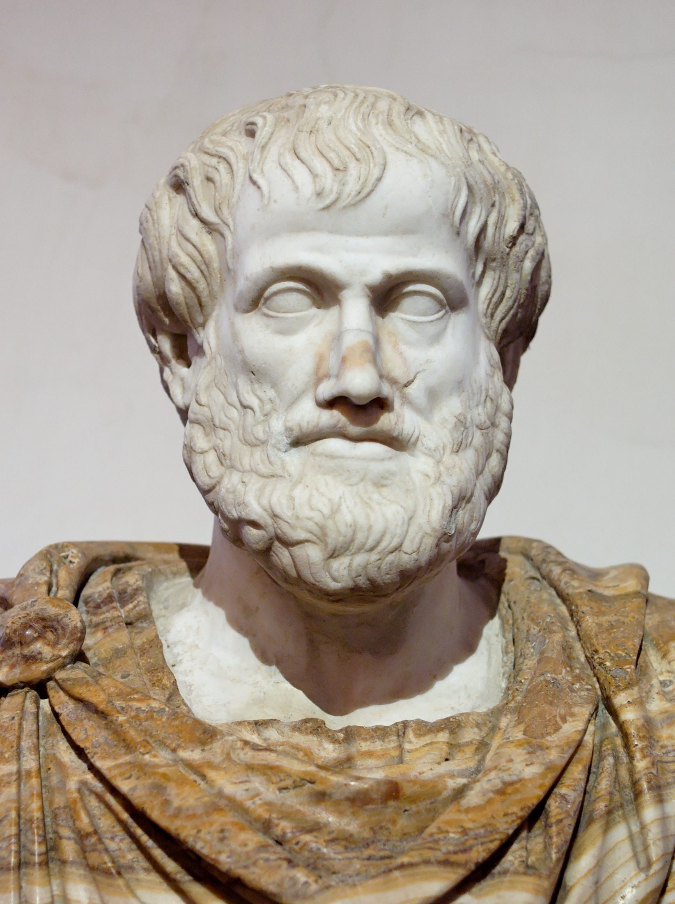
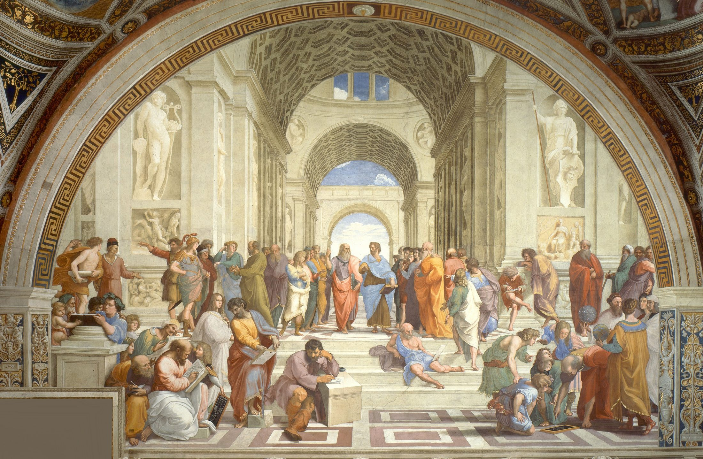

Central Questions
- What is virtue ethics, and how does Aristotle understand human character and flourishing?
- What makes technology a moral concern — not just a tool but a shaper of who we are becoming?
- How might social media and AI undermine intellectual virtues like curiosity and open-mindedness?
- How might digital environments erode moral virtues like empathy, patience, and honesty?
- Are virtue ethics arguments for technology regulation compatible with individual liberty?
Introduction: What Is Virtue Ethics?
Most ethical debates about technology focus on actions: Should platforms remove harmful content? Is it wrong to share someone's private information? Should companies be allowed to collect data on children? These are important questions, but they share an implicit framing — they treat ethics as a problem of sorting permitted actions from prohibited ones. A different tradition in moral philosophy asks a more fundamental question: not "What should I do?" but "What kind of person am I becoming?"
This is the central question of virtue ethics, the oldest sustained tradition in Western moral philosophy, rooted in the work of the ancient Greek philosopher Aristotle. Rather than providing a decision procedure for evaluating individual acts, virtue ethics invites us to think about character — the stable dispositions to perceive, feel, and act in certain ways that define who we are over time. From this perspective, technology is a moral issue not primarily because specific apps or algorithms occasionally produce bad outcomes, but because the daily practices of digital life are continuously shaping the people we are becoming.
In Chapter 1, we traced five major information revolutions and noticed a recurring pattern: each new technology reshapes not just what people can do, but how they think, communicate, and relate to each other. Writing atrophied the ancient practice of oral memory. The printing press disrupted religious authority and enabled mass propaganda. Mass media created the preconditions for totalitarianism. Virtue ethics gives us a precise vocabulary for naming what is at stake in these transformations: our intellectual and moral character. If Aristotle is right that we become what we repeatedly do, then the habits built by hours of daily screen time are not ethically neutral.
This chapter develops three interconnected arguments. First, we examine how social media and AI may undermine intellectual virtues — the habits of careful reasoning, sustained attention, and open-minded inquiry that make us good thinkers. Second, we look at how digital environments may erode moral virtues — the empathy, patience, civility, and honesty that make us good people to one another. Third, we consider whether these effects cumulatively threaten eudaimonia — the Aristotelian conception of a genuinely flourishing human life. We then survey policy responses and engage seriously with the strongest objections.
"We are what we repeatedly do. Excellence, then, is not an act, but a habit."
— Aristotle, Nicomachean Ethics
Aristotle's Ethical Framework

Aristotle (384–322 BCE). Roman marble copy of a Greek bronze by Lysippos, c. 330 BCE. Museo Nazionale Romano, Rome. Public domain.
Aristotle (384–322 BCE)
Born in Stagira in northern Greece, Aristotle studied at Plato's Academy for twenty years before founding his own school, the Lyceum, in Athens. He tutored the young Alexander the Great and was later simply known to medieval scholars as "the Philosopher" — no further identification needed. His Nicomachean Ethics, named for his son Nicomachus, remains one of the most carefully argued and widely read works of moral philosophy ever written. Unlike his teacher Plato, who grounded ethics in abstract ideal Forms, Aristotle began with the observable world: How do virtuous people actually live? What practices make a life go well?
Aristotle begins the Nicomachean Ethics with what seems like a simple observation: every action aims at some good. We eat to satisfy hunger; we study to acquire knowledge; we work to earn money. But Aristotle asks: is there some highest good — something we pursue for its own sake rather than as a means to something else? He argues that the answer is eudaimonia, a Greek word usually translated as "happiness" or "flourishing," but meaning something richer than either English word typically conveys.
Eudaimonia is not a feeling. It is not the pleasant emotional state you might experience on a good day, nor is it the life satisfaction you might report when surveyed. Eudaimonia, for Aristotle, is the activity of the soul in accordance with virtue over a complete life. It is what your life amounts to when you have developed and exercised your distinctively human capacities — above all, the capacity for reason — in an excellent way. A person can feel pleasure while doing something vicious; a person living in eudaimonia is, by definition, living well and acting rightly.
| Eudaimonia | Hedonic Happiness | Life Satisfaction | |
|---|---|---|---|
| Focus | Living virtuously | Feeling pleasure | Judging life positively |
| Timeframe | Complete life | Momentary | Retrospective |
| Source | Virtuous activity | Pleasant experiences | Meeting expectations |
| Can be wrong? | No — it's constitutive of a good life | Yes — you can feel happy doing wrong | Yes — you can be mistaken about your life |
This distinction matters enormously for evaluating technology. Social media platforms are very good at producing momentary pleasure — the dopamine hit of a notification, the satisfaction of a viral post, the comfort of an algorithmically curated feed. But whether these pleasurable experiences contribute to, or actually undermine, genuine flourishing is an entirely separate question.
Virtue and the Doctrine of the Mean
How does one achieve eudaimonia? Through virtue (in Greek, aretē), which Aristotle understands as a stable disposition to act, feel, and perceive in an excellent way. Virtues are not rules we follow from the outside; they are traits of character we have internalized through practice. The courageous person does not overcome fear through an act of will on each occasion — courage has become part of who they are.
Aristotle famously describes each virtue as a mean between two extremes. Courage is the mean between cowardice (too little confidence) and recklessness (too much). Generosity is the mean between miserliness and profligacy. The mean is not a mathematical midpoint; it is what is appropriate to the situation and the person. What counts as appropriate patience when using a search engine might differ from what counts as appropriate patience in a friendship. The person who has practical wisdom — phronesis — is precisely the person who can perceive what virtue requires in each particular situation.
Aristotle distinguishes two broad categories of virtue. Intellectual virtues are excellences of the reasoning mind: theoretical wisdom (sophia), practical wisdom (phronesis), scientific understanding (episteme), intuitive reason (nous), and craft knowledge (techne). Moral virtues are excellences of character: courage, temperance, justice, generosity, honesty, and friendliness, among others. Phronesis — practical wisdom — is what Aristotle calls the "master virtue" because it is required to apply all the other virtues correctly. It cannot be reduced to rules or algorithms; it requires judgment developed through experience and reflection.
Crucially, both types of virtue are acquired through practice. We become courageous by doing courageous acts, honest by being truthful, patient by bearing difficulty without complaint. The environment in which we practice matters immensely: communities, institutions, and daily habits all shape our developing character. As Aristotle writes, "We become just by doing just acts, temperate by doing temperate acts, brave by doing brave acts." This is why technology is a moral concern at the deepest level — it structures the environment in which we practice being human.
(Reason)"] -->|"cultivate"| B["Virtue
(Aretē)"] B -->|"expressed in"| C["Flourishing
(Eudaimonia)"] style A fill:#d8e6f5,stroke:#003875 style B fill:#d8e6f5,stroke:#003875 style C fill:#003875,color:#fff,stroke:#003875
The Modern Revival of Virtue Ethics

For much of the twentieth century, moral philosophy was dominated by two traditions: Kantian deontology (ethics as rule-following) and utilitarian consequentialism (ethics as maximizing well-being). Both focused on evaluating individual actions rather than character. The revival of virtue ethics as a serious philosophical framework began in the late twentieth century, driven by dissatisfaction with both approaches.
Alasdair MacIntyre (born 1929)
Scottish philosopher whose landmark book After Virtue argued that modern moral philosophy had collapsed into fragmented, incommensurable viewpoints — what he called "emotivism," the view that moral statements are merely expressions of personal preference dressed up in objective-sounding language. MacIntyre contended that virtues are intelligible only within the context of social practices and traditions that give them meaning. His work prompted a major reconsideration of how character, community, and narrative shape moral life.
MacIntyre's diagnosis hits close to home in the age of social media. When moral discourse migrates onto platforms optimized for engagement rather than truth, it tends to become exactly what he feared: a clash of incompatible emotional reactions, amplified by algorithms that reward outrage, with no shared framework for reasoned resolution. He writes that he "can only answer the question 'What am I to do?' if I can answer the prior question 'Of what story or stories do I find myself a part?'" Social media's tendency to fragment our sense of continuous identity — replacing narrative coherence with a feed of disconnected moments — is, on this view, not a trivial inconvenience but a threat to the preconditions of moral life.
British philosopher Rosalind Hursthouse addressed a common objection to virtue ethics: that it fails to give action-guidance. What should I do? Her answer is that virtue ethics generates what she calls "v-rules": "Do what is honest," "Do what is compassionate," "Don't do what is cruel." These rules differ from Kantian imperatives in that they derive their content from character rather than obligation, and they must be applied with the practical wisdom to perceive what each situation demands. The virtuous person is not following an external checklist — they have developed the perception and judgment to see what honesty or compassion actually requires here and now.
Martha Nussbaum developed the capabilities approach, arguing that human flourishing requires the ability to exercise a core set of distinctively human capacities: life; bodily health; the use of senses, imagination, and thought; the experience of emotions; practical reason; affiliation with others; play; and control over one's environment. The capabilities approach connects virtue ethics to questions of justice and policy: a just society ensures that all its members have access to the conditions necessary for flourishing. When we ask whether social media helps or hinders human flourishing, Nussbaum's list of capabilities provides a useful checklist.
Shannon Vallor (born 1974)
Philosopher of technology at the University of Edinburgh, whose book Technology and the Virtues offers the most systematic application of Aristotelian ethics to contemporary digital technologies. Vallor argues that technology is not ethically neutral — through our habitual use of devices and platforms, we cultivate either virtues or vices. She proposes twelve "technomoral virtues" appropriate to the digital age: honesty, self-control, humility, justice, courage, empathy, care, civility, flexibility, perspective, magnanimity, and technomoral wisdom. Her central argument is that human moral character is still shaped by habituation, just as Aristotle thought — but our habituating environment now includes billions of hours of engagement with systems designed for profit rather than flourishing.
Vallor's framework is the bridge between classical virtue ethics and the practical analysis that follows. She uses the Greek term pharmakon — which in ancient Greek meant simultaneously "poison" and "cure" — to characterize technology's moral ambiguity. Social media is not inherently vicious; it could be designed to cultivate patience, honest discourse, and genuine connection. But as presently constituted, the evidence suggests it tends to habituate users toward intellectual and moral vice. The question, on her account, is not whether technology shapes our character — it already does — but whether we will take conscious control of how it does so.
Intellectual Virtues Under Threat
The intellectual virtues Aristotle prized — curiosity, love of truth, intellectual humility, open-mindedness, intellectual courage, and intellectual autonomy — are not passive possessions. They are active dispositions that must be continuously exercised and developed. A person becomes intellectually humble by repeatedly confronting the limits of their knowledge and updating their beliefs accordingly. A person becomes genuinely curious by cultivating the habit of following questions wherever they lead, even when the answers are uncomfortable. Like physical fitness, intellectual virtue atrophies without practice.
Argument 1: Technology and Intellectual Vice
- Intellectual virtues are cultivated through sustained, effortful cognitive practices: sustained attention, active memory work, critical analysis, and deep reading.
- Social media and AI systematically replace or undermine these practices.
- Habituation in intellectually passive behaviors cultivates intellectual vice rather than virtue.
- Therefore, social media and AI tend to undermine intellectual virtue.
The Attention Crisis
In his influential book The Shallows , journalist and technology critic Nicholas Carr argued that internet use is literally rewiring the brain for distraction. The case is not that the internet makes us less intelligent in the IQ sense; it is that habitual digital media use trains the mind toward shallow, rapid scanning at the expense of the deep, slow, sustained attention that is necessary for genuine intellectual development. Deep reading — the kind that allows us to follow complex arguments, inhabit another perspective, and integrate new information with what we already know — requires a mind capable of holding attention over extended periods. Carr argues that this capacity is being degraded by the constant interruptions, hyperlinks, and notifications that define the internet experience.
Jonathan Haidt's research on adolescent mental health adds a generational dimension to this concern. The shift to smartphones as the primary medium of teenage social life, occurring around 2012, coincided with sharp increases in depression and anxiety rates — but also with dramatic declines in time spent in deep reading and sustained face-to-face conversation. The underlying mechanism may be what technology researchers call continuous partial attention: a chronic state in which no single task ever receives full concentration because attention is always partially allocated to monitoring incoming notifications, messages, and social signals. William James, one of the founders of modern psychology, identified the capacity to return a wandering attention voluntarily as "the very root of judgment, character, and will." If he was right, the continuous partial attention cultivated by smartphone use is undermining something fundamental.
| Metric | Around 2004 | Around 2024 |
|---|---|---|
| Average screen attention span before task-switching | ~2.5 minutes | ~47 seconds |
| Deep reading time per day (teens) | ~60 minutes | ~15 minutes |
| Average daily phone checks | Not applicable | 150+ times |
Outsourcing Memory and Cognition
A related concern involves what cognitive scientists call cognitive offloading — using technology as an external supplement to mental processes that were previously performed internally. A striking study by Sparrow and colleagues found that when people expect to be able to look up information later, they are significantly less likely to encode it in memory. We remember where to find facts more readily than the facts themselves. This finding, sometimes called the "Google Effect," suggests that ready access to search engines may be changing how we relate to knowledge — shifting us from active knowers who have internalized and can reason about information to passive retrievers who know how to locate it.
Carr notes that the medieval monks who invented many techniques of deep reading understood something important: committing texts to memory is not mere rote learning but a process that allows ideas to combine, resonate, and generate new thoughts. When information is stored externally rather than internally, this generative process is curtailed. The concern is not primarily that Google makes us lazy — it is that the practice of effortful memory work is itself a form of intellectual exercise that builds the cognitive capacities underlying intellectual virtue. When AI writing tools now offer to compose arguments, analyze texts, and synthesize sources on our behalf, the deskilling concern deepens: we lose not only the product of the effort, but the intellectual character that the effort was building.
Epistemic Bubbles and Echo Chambers
Philosopher C. Thi Nguyen draws an important distinction that is easy to miss. An epistemic bubble is a social environment in which you are simply not exposed to certain viewpoints or sources of information — an information gap. An echo chamber is something more insidious: an environment in which the voices outside your circle have been actively discredited, so that exposure to contrary evidence no longer updates your beliefs but rather reinforces your suspicion of the messenger. Epistemic bubbles can be corrected by exposure; echo chambers cannot, because the very mechanism for correction has been disabled.
| Epistemic Bubble | Echo Chamber | |
|---|---|---|
| Mechanism | Other voices simply not heard | Other voices actively discredited |
| Result | Missing information | Systematic distrust of outside sources |
| Fix | Exposure to other views | Rebuilding trust — much harder |
Algorithmic curation on social media tends to create bubbles by design — the recommendation engine learns what you engage with and shows you more of the same. For instance, a person who clicks on a few videos skeptical of vaccine safety will, on YouTube and TikTok, be served progressively more content from the same cluster of creators — not because those creators are correct or popular, but because that person's engagement pattern predicts more engagement with similar material. The bubble has formed, and the person may not even be aware of it: they now "know" a great deal about vaccine skepticism and very little about the mainstream scientific literature. The echo chamber is the more advanced stage: they have also learned, from their curated feed, to treat anyone who cites mainstream sources as a paid shill or a credulous dupe.
AI and Intellectual Dependency
The most recent and perhaps most profound challenge to intellectual virtue comes from large language model AI systems — tools like ChatGPT that can generate plausible-sounding essays, solve problems, explain concepts, and engage in sophisticated dialogue. Vallor warns of "moral deskilling" through automation: the gradual erosion of human capacities when machines take over tasks we once performed ourselves . The concern about AI writing and reasoning tools is analogous to the concern about calculators, but goes deeper: when a student uses a calculator, they bypass one specific skill; when they use an AI to write their argument, they may bypass the entire process of intellectual struggle through which analytical thinking is developed.
Aristotle held that virtues require practice — we cannot become courageous without doing courageous things, intellectually curious without following our curiosity into difficult territory. AI tools that provide answers without requiring us to develop understanding are, on this view, not merely time-saving conveniences. They are environments that habituate us toward intellectual passivity — toward expecting answers rather than working for understanding. Consider the difference between two students writing a philosophy essay. One spends an hour struggling to articulate what Kant means by the categorical imperative, discarding three drafts, rereading the original text, and finally arriving at a formulation they can defend. The other types a prompt into an AI and receives a polished paragraph in ten seconds. The second student has a product; the first has developed a capacity. For a virtue ethicist, this distinction is not pedantic — the capacity, built through the struggle, is the whole point. Whether this concern is fully warranted is an empirical question that will take years to answer. But it is precisely the question a virtue ethicist would ask.
Thought Questions
- When was the last time you read something complex for thirty or more minutes without checking your phone? Does the difficulty matter?
- Can you think of knowledge or skills you once had that you now rely on technology for? How does that feel?
- Where is the line between a helpful tool that extends human capability and a crutch that atrophies it?
Moral Virtues Under Threat
If intellectual virtues are developed through effortful cognitive practice, moral virtues are developed through the difficult, irreplaceable work of living alongside other people. Empathy develops through sustained exposure to others' vulnerability — learning to see their pain as real, their perspective as legitimate, their emotional reality as something you can imaginatively inhabit. Patience develops through waiting, tolerating discomfort, learning that not everything comes instantly. Honesty develops through the repeated practice of choosing truth over convenience, and experiencing the trust that builds as a result. A good example of how digital mediation can thin out these practices: consider what is lost when a difficult conversation that would once have happened face-to-face is instead conducted by text message. The recipient does not see your hesitation, hear the tension in your voice, or have the chance to respond to your expression in real time. You do not have to sit with their pain. Both of you have been spared the discomfort that is, arguably, where moral learning happens.
Argument 2: Technology and Moral Vice
- Moral virtues are cultivated through embodied, face-to-face social practices involving vulnerability and reciprocity.
- Digital mediation systematically replaces or degrades these practices.
- Online environments actively habituate users toward moral vices: cruelty, impatience, dishonesty, and performative virtue.
- Therefore, social media and AI tend to undermine moral virtue.
Face-to-Face Conversation as Moral Practice
MIT sociologist Sherry Turkle has spent decades studying how people relate to technology, and her findings paint a troubling picture. In Reclaiming Conversation , she argues that face-to-face conversation is irreplaceable as the context in which empathy develops. When we speak to someone in person, we receive a continuous stream of non-verbal information — facial expressions, posture, tone of voice, eye contact — that makes their inner life viscerally present to us. We learn to tolerate awkward silences. We receive immediate feedback when our words land wrong. We must be present to another human being in their full, unedited complexity. These demands are uncomfortable, and avoiding them is exactly what text-based digital communication allows us to do.
The problem is that these demands are not merely annoying obstacles to efficient communication — they are, Turkle argues, the moral substance of human relationship. "Face-to-face conversation is the most human — and humanizing — thing we do," she writes. "Fully present to one another, we learn to listen. It's where we develop the capacity for empathy." When teens spend more time communicating by text than in person, they are practicing a thinner form of social interaction — one that requires and develops less empathy, patience, and social skill. Research confirms that empathy scores among American college students declined by approximately 40% between 1979 and 2009, with the steepest drop occurring after 2000, correlating with the rise of digital communication.
Online Disinhibition and the Normalization of Cruelty
Psychologist John Suler identified what he called the "online disinhibition effect" : the well-documented phenomenon that people behave more aggressively, dishonestly, and cruelly online than they would in person. He catalogued the features of online environments that produce this effect.
| Factor | Effect on Behavior |
|---|---|
| Anonymity | "You don't know me" — reduced accountability for actions |
| Invisibility | Can't see the victim's pain — reduced empathy cues |
| Asynchronicity | No immediate feedback — easier to say things you'd regret in person |
| Dissociative imagination | Online self feels separate from the "real" self |
| Minimization of authority | Flattened hierarchies reduce ordinary social restraints |
From a virtue ethics perspective, online disinhibition is not primarily a technical problem to be solved by better content moderation. It is a moral habituation problem. Every time a person says something cruel online that they would not say to a face, they practice cruelty. Every cruel act, if Aristotle is right, shapes character in the direction of cruelty. The normalization of aggressive, dismissive, and dishonest speech in online environments is not merely unpleasant — it is a form of moral training in the wrong direction, repeated billions of times daily across millions of users.
Outrage as a Business Model
Jonathan Haidt's research on social media's transformation of political and social discourse pinpoints 2009 as a pivotal year . That year, Facebook added the Like button and Twitter added the Retweet function — seemingly small design choices that fundamentally altered the incentive structure of online communication. Content that generates strong emotional reactions — particularly anger and moral outrage — receives more engagement than nuanced, balanced content. Engagement is rewarded by algorithmic amplification. This creates a self-reinforcing cycle in which the emotional temperature of public discourse rises continuously, users are trained toward emotional extremism, and content that would once have been considered inflammatory becomes routine.
Haidt calls this "moral grandstanding" — the practice of publicly performing virtuous outrage as a social signal, rather than actually acting to address problems. A person who spends an hour sharing angry posts about a social injustice has "done something" in a socially legible way while expending no effort that addresses the underlying problem. From an Aristotelian view, this is worse than mere inaction: it habituates the person toward the performance of virtue while bypassing the practice of virtue itself. The gap between apparent virtue and actual character is precisely what Aristotle called vice.
Dishonesty and the Curated Self
Digital platforms also enable and reward systematic inauthenticity. The carefully curated Instagram profile — the best photos, the happiest moments, the most flattering angles — creates a performed identity that diverges increasingly from lived experience. The gap between the self presented online and the self actually lived is a form of ongoing dishonesty, not just toward one's audience but toward oneself. Over time, Turkle argues in Alone Together , the performance can come to feel more real than the reality: people begin managing their lives to generate content for their feeds rather than experiencing life directly.
Hannah Arendt, whose work on the social conditions of political life is among the most important of the twentieth century, warned that the erosion of a shared sense of reality is one of the preconditions of political tyranny. When the distinction between fact and fiction becomes optional — when deepfakes, AI-generated content, and strategic misinformation make it genuinely difficult to know what is real — the democratic practices that depend on a shared factual world are severely threatened. The individual virtue of honesty has collective political stakes.
| Virtue | Traditional Practice | Digital Replacement |
|---|---|---|
| Empathy | Face-to-face conversation | Text-based interaction |
| Patience | Waiting, delayed gratification | Instant everything |
| Civility | Social norms, accountability | Anonymous or pseudonymous cruelty |
| Honesty | Reputation, trust-building over time | Curated, optimized personas |
| Temperance | Natural limits on stimulation | Infinite scroll, autoplay, push notifications |
Thought Questions
- Have you ever written something online that you would not have said to someone's face? What made it easier?
- Think about your social media profile. In what ways does it represent who you actually are, and in what ways does it represent who you want to appear to be?
- Does the outrage you see online ever translate into action that actually changes anything? What is the relationship between online moral performance and real moral action?
Eudaimonia Under Threat
Beyond specific intellectual and moral virtues, the deepest Aristotelian concern is about the shape of a complete human life. Eudaimonia requires more than isolated virtuous acts — it requires the integrated exercise of our highest capacities across time, in the context of genuine relationships, purposeful activity, and honest self-knowledge. Contemporary evidence suggests that social media and AI may be fragmenting attention, commodifying relationships, and distorting self-understanding in ways that threaten the conditions necessary for a genuinely flourishing life.
Argument 3: Technology and Diminished Flourishing
- Eudaimonia requires the integrated exercise of virtue across a complete life, including meaningful relationships, purposeful activity, and self-knowledge.
- Social media and AI fragment attention, commodify relationships, and distort self-understanding.
- These effects directly impede the conditions necessary for eudaimonia.
- Therefore, social media and AI tend to undermine human flourishing.
The Mental Health Crisis
Perhaps the most alarming piece of evidence for the eudaimonia argument is the adolescent mental health crisis that has unfolded since roughly 2012. Haidt documents in The Anxious Generation that rates of depression, anxiety, and self-harm among American teenagers — particularly girls — began rising sharply around 2012, which corresponds closely to the year smartphones became the majority technology for American teens. The correlation is striking, though correlation does not prove causation, and Haidt's interpretation remains contested by some researchers.
Several mechanisms have been proposed. Social media enables social comparison at a scale and intensity previously impossible: teenagers can monitor hundreds of peers' curated self-presentations simultaneously, receiving continuous feedback about their relative social standing. The combination of this social surveillance with the physical displacement of sleep (phones in bedrooms) and face-to-face time (replaced by screen time) creates conditions particularly toxic for developing minds. Aristotle emphasized that eudaimonia requires material and social conditions that support human development; this suggests that designing those conditions well — especially for young people — is itself an ethical imperative.
Commodified Relationships and the Loneliness Epidemic
Turkle's book Alone Together captures a paradox at the heart of the social media age: we are more "connected" than any humans in history, yet loneliness has become a public health crisis. The explanation lies in the difference between connection and genuine relationship. Social media friendship is typically measured by metrics — followers, likes, streaks, engagement rates — that have only an approximate relationship to the qualities that make friendship genuinely nourishing: shared vulnerability, mutual care, reciprocal knowledge of one another's inner lives.
Dating apps extend this commodification to romantic relationships, subjecting potential partners to rapid evaluation and easy disposal in ways that may undermine the patience and sustained attention that deep intimacy requires. Parasocial relationships — the one-sided bonds that users form with social media influencers, podcasters, and increasingly AI companions — provide some of the emotional texture of relationship without its reciprocal demands. Turkle worries that we have come to "expect more from technology and less from each other" — a substitution that may feel convenient in the short term but erodes our capacity for the genuine human connection on which eudaimonia depends.
Algorithmic Identity and Distorted Self-Knowledge
Aristotle placed self-knowledge — the honest, examined understanding of who one actually is — at the foundation of the ethical life. The ancient injunction "Know thyself" was for him not a platitude but a demanding practical requirement: genuine virtue requires that we perceive our own motivations clearly, recognize our tendencies toward excess and deficiency, and understand the gap between who we are and who we aspire to be. This kind of honest self-knowledge is threatened by a media environment in which our self-image is partly constructed by algorithms.
Recommendation algorithms learn what content you engage with and show you more of the same — they construct a mirror image of you built from your behavior patterns. But the algorithm's image of you reflects what captures your attention, not what you reflectively endorse, what you aspire to, or who you understand yourself to be. The loop between your behavior, the algorithm's model, the content it feeds you, and your subsequent behavior can lock people into identities they would not have chosen on reflection. It replaces the examined life — constantly interrogated and revised through experience and dialogue — with an algorithmically optimized product built from the residue of one's browsing history.
Thought Questions
- How many of your online connections would you describe as genuine friendships? What distinguishes a genuine friend from a follower?
- Does your social media feed show you the world as you would choose to see it, or as an algorithm has decided you will pay attention to? What is the difference?
- Have you ever felt that spending time on social media made you feel worse about your own life? What was the mechanism?
Policy Responses
If the virtue ethics diagnosis is correct — if social media and AI are systematically habituating users toward intellectual and moral vice and undermining the conditions for flourishing — what follows practically? Two broad categories of response are available: individual responses that change personal habits and practices, and structural responses that address the design and regulation of technology at the systemic level. Virtue ethicists tend to see both as necessary, since individual willpower is limited and environmental design shapes what habits are even possible.
| Individual Responses | Structural Responses | |
|---|---|---|
| Examples | Phone-free meals, digital sabbaths, attention training | Age restrictions, design mandates, algorithm transparency |
| Advantages | Personal agency, immediately actionable | Addresses root causes, applies equally |
| Limits | Willpower is exhaustible; advantage goes to tech firms | Raises paternalism concerns; difficult to enforce |
Vallor argues that individual responses — what she calls building a personal moral "operating system" for technology use — are essential but insufficient. Digital detoxes, attention training through meditation and deep reading, explicit commitments to face-to-face conversation, critical scrutiny of algorithmic recommendations: these are practices that can genuinely cultivate the virtues being eroded. But they require individuals to swim against a powerful current of commercial incentives and engineered addiction, which makes structural support necessary.
Case Study: Australia's Social Media Age Law (2024)
In November 2024, Australia passed legislation banning children under 16 from social media platforms, with heavy fines for companies that fail to enforce the age limit. The law, which took effect in 2025, is one of the most ambitious attempts by any government to reshape the relationship between young people and social media. Advocates argue it reflects a virtue ethics logic: children's character is developing, they lack the phronesis to navigate platforms designed to exploit psychological vulnerabilities, and the state has an interest in protecting the conditions for healthy moral development.
Critics argue the law is difficult to enforce without invasive age verification measures, that it may drive young people toward less regulated platforms, and that it sets a troubling precedent for government control of online speech. The Australian case will be closely watched as a natural experiment in what structural intervention can and cannot accomplish.
Other structural proposals include design mandates — requirements that platforms remove or redesign features shown to habituate users toward vice (infinite scroll, autoplay, manipulative notification systems); algorithm transparency requirements — giving users and regulators insight into what recommendation algorithms optimize for; digital literacy education — teaching young people to recognize the psychological techniques used to capture and hold their attention; and AI governance frameworks — ensuring that AI systems preserve rather than replace authentic human engagement. The virtue ethics justification for all of these is similar: we are entitled to design our shared environment to be more conducive to human flourishing.
Thought Questions
- Which of Vallor's practical recommendations — digital sabbaths, attention training, face-to-face priority — could you realistically implement? What would it take?
- Is the Australian approach — a hard age limit enforced by law — a legitimate protection of children's flourishing, or an overreach by the state?
- Should platforms be required to disclose what their algorithms optimize for? Would knowing change how you use them?
Objections and Responses
The virtue ethics critique of technology is compelling, but it faces serious objections from multiple directions. Taking these objections seriously is itself an exercise in intellectual virtue.
Objection 1: The Paternalism Problem (Berlin and Mill)
- Virtue ethics assumes a particular conception of the good life — one centered on sustained attention, face-to-face connection, and active memory work.
- In a pluralistic society, the state should not impose any single conception of the good (Isaiah Berlin's negative liberty: freedom from interference, not freedom to flourish) .
- Restricting social media — or designing technology to cultivate particular virtues — treats adults as children unable to choose their own good.
- Therefore, virtue ethics arguments for technology regulation constitute paternalistic overreach.
Berlin's distinction between negative and positive liberty is one of the most important in twentieth-century political philosophy. Negative liberty is simply the absence of external interference — you are free if no one stops you from doing what you want. Positive liberty is the more demanding notion of being free to realize your genuine potential or pursue your true good. Berlin's concern, sharpened by bitter twentieth-century experience, was that appeals to positive liberty — to what people's "true" interests require — have historically been used to justify some of history's worst tyrannies. Telling people what their real flourishing consists in and arranging society to pursue it on their behalf is a pattern with a grim track record.
This objection is serious and should not be dismissed. Several responses are available, however. First, most virtue ethics policy proposals focus on children, not adults — and it is much less controversial to say that protecting the moral development of those who have not yet achieved full autonomy is a legitimate state interest. Second, the relevant choice may not be between free markets and government intervention, but between two forms of manipulation: algorithmic manipulation by platforms optimizing for engagement, and structural design oriented toward human flourishing. If the current tech environment already involves systematic manipulation of "choice architecture," the question is not whether to design the environment but how. Third, some interventions — transparency requirements, design mandates, defaults rather than bans — are "soft" in Berlin's sense: they change the environment of choice without eliminating options.
Objection 2: The Nietzschean Challenge — Who Decides What Virtue Is?
- Virtue ethics assumes we can reliably identify which character traits count as virtues and which as vices.
- But historically, "virtues" have often reflected power structures, cultural prejudices, or what Nietzsche called "herd mentality" — conformity to conventional expectations rather than genuine human excellence .
- Some characteristics labeled "vices" online — irreverence, confrontation, non-conformity — may be necessary for authentic excellence.
- Therefore, the virtue ethics critique of technology may reflect conservative cultural bias rather than genuine ethical insight.
Nietzsche's challenge to conventional morality is philosophically powerful. He argued that the virtues celebrated in ancient Greece — the virtues of the heroic aristocrat, the person of great ambition and self-assertion — were systematically suppressed in favor of what he called "slave morality": the praise of meekness, submission, and conformity that reflects the needs of those who cannot dominate but can form majorities. The virtue ethics critique of social media, in this light, might reflect the preferences of an intellectual class who value deep reading, face-to-face conversation, and sustained attention — a class whose cultural practices happen to be threatened by digital populism.
The Aristotelian response would be to appeal not to cultural consensus but to human nature: some character traits are genuinely better for human beings because they are more fully expressive of our rational and social nature. Intellectual humility, honest self-examination, and empathic engagement with others are not mere cultural preferences — they are constitutive of the kind of creature we are. Whether this response is fully satisfying is a question philosophers continue to debate. But it is worth noting that Nietzsche's "higher man" — the person who self-consciously transcends conventional morality — presumably also requires the intellectual virtues of honesty and self-examination that the critique aims to protect. Even on Nietzschean terms, technologies that systematically cultivate self-deception, intellectual passivity, and social comparison anxiety seem unlikely to be routes to genuine excellence.
A third objection, worth briefly noting, is empirical: the evidence that social media actually causes the harms attributed to it is more contested than advocates claim. Some researchers dispute the causal interpretation of the adolescent mental health data; others argue that the effects of social media are small or context-dependent. Virtue ethics claims about technology's effects on character are, in part, empirical claims, and intellectual virtue requires treating them as such — taking the evidence seriously without overstating its certainty.
Thought Questions
- Is there a meaningful difference between protecting children from social media and "protecting" adults? Where should that line be drawn?
- Could the virtue ethics critique of social media reflect the cultural preferences of a particular class of intellectuals rather than universal human goods?
- If the evidence that social media causes mental health harms is genuinely uncertain, how should policymakers respond?
Key Points
- Virtue ethics asks not "What should I do?" but "What kind of person am I becoming?" — making the habitual practices of digital life a central ethical concern.
- Aristotle argued that virtues are stable character traits developed through practice and habituation; the environment in which we practice shapes the character we acquire.
- Eudaimonia (flourishing) is not pleasure or life satisfaction — it is the active exercise of our highest capacities across a complete life, requiring virtue, meaningful relationships, and honest self-knowledge.
- Intellectual virtues (curiosity, open-mindedness, intellectual humility) may be undermined by the attention crisis, cognitive offloading, echo chambers, and AI dependency produced by current digital technologies.
- Moral virtues (empathy, patience, civility, honesty) may be eroded when digital mediation replaces face-to-face practice, online disinhibition normalizes cruelty, and outrage-optimizing algorithms reward moral performance over moral action.
- Shannon Vallor applies Aristotelian virtue ethics to technology, arguing that our habitual digital practices cultivate either virtues or vices — and that intentional design for virtue cultivation is both possible and necessary.
- Isaiah Berlin's distinction between negative liberty (freedom from interference) and positive liberty (freedom to flourish) poses the central challenge to virtue ethics regulation: appealing to people's "true" good has historically justified tyranny.
- Nietzsche's challenge — who decides what counts as virtue? — demands that virtue ethicists ground their claims in something more than cultural consensus or class preference.
- Individual and structural responses to technology's moral harms are both necessary: personal practices building virtuous character, and social design creating environments more conducive to flourishing.